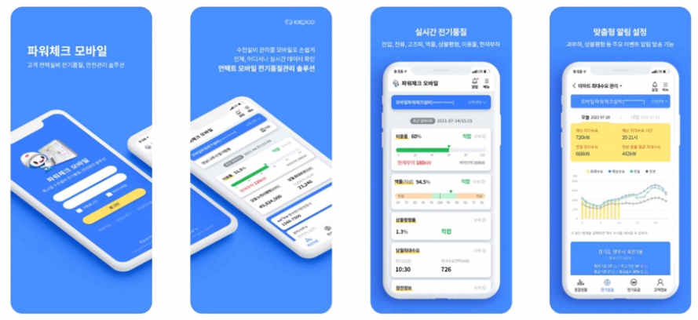

가. 사업개요
AMI(지능형 전력량계) 빅데이터 분석과 AI기술을 활용해 전기안전관리자의 전기설비관리를 돕는 솔루션으로 아파트 등 고압고객을 대상으로 하고 있습니다.
(모바일) 구글플레이/앱스토어 “파워체크” 검색

(PC) https://check.kepco.co.kr
나. 가입대상
- 원격검침을 하고 있는 특고압 수전설비의 전기안전 관리자
- 전기안전관리를 위탁 수행하는 대행 기업
- 고압 아파트 입주자대표회의 등 전기사용계약 고객
다. 가입방법
- 전기안전관리자나 대행기업의 경우 시스템에서 회원가입 절차를 진행
- 고압아파트 관리사무소 등 개별 고객께서는 PC에서 가입양식을 다운받아 작성 후 팩스(061-345-6899) 또는 이메일(check@kepco.co.kr)로 제출
※ 한전 사이버지점 회원이시면 별도 가입절차없이 사이버지점 계정으로도 로그인 가능합니다.
라. 제공정보
- 수전설비 운영에 필요한 전기품질 자료(이용률, 현재부하, 역률, 당월 최대수요, 정전정보 등)
- 고압아파트 전력분석(예상 최대수요, 전력사용 통계)
- 전기요금 상세정보 및 월별 청구현황
- 전기사용 계약사항, 전력량계 정보와 수전설비 정기검사 일정, 정전정보
마. 문의처 : ☎ 061-345-6865